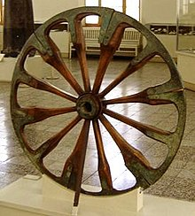
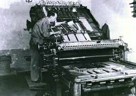
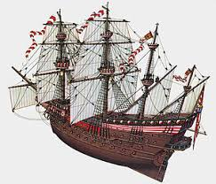
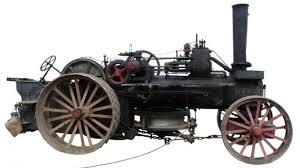
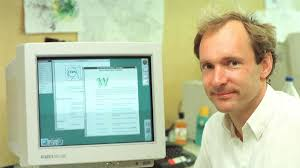

| COMPONENTE |
DESEMPEÑO |
| Naturaleza y evolución de la tecnología: | Identifico innovaciones e inventos trascendentales para la sociedad; los ubico y explico en su contexto histórico. |
| COMPONENTE |
DESEMPEÑO |
| Naturaleza y evolución de la tecnología: | Identifico innovaciones e inventos trascendentales para la sociedad; los ubico y explico en su contexto histórico. |
Hace algunos años, no muchos, digamos unos 5 millones de años, el hombre tenía todo su cuerpo cubierto de pelo. Luego lo perdió (aunque no en todos los casos...) pero de todas formas, el hombre encontró la forma de cubrir sus necesidades y para evitar el frío se cubría con pieles de los animales que cazaba para comer.
Después, descubrió que las fibras vegetales le podían dar abrigo e inventó la ropa. Se cansó de andar descalzo e inventó los zapatos, se cansó de gritar e inventó el teléfono, se cansó de quemarse los dedos (y las pestañas) con velas e inventó la luz eléctrica, se cansó de contar a mano e invento la calculadora, y el ordenador...
Como sabemos, la tecnología fabrica objetos para mejorar nuestra calidad de vida en todos los aspectos. Y es más, estas innovaciones tecnológicas parecen surgir a un ritmo muy alto, piensa si no en que rápido se quedará tu ordenador obsoleto cuando sólo pasen meses.
La Evolución Tecnológica va mano a mano con la Ciencia, aunque ambas cosas son distintas:
Se suele asociar tecnología con modernidad, pero realmente la actividad tecnológica, la curiosidad por modificar nuestro entorno para mejorar nuestras condiciones de vida, es algo tan viejo como la humanidad.
La Prehistoria.
Es el periodo de tiempo transcurrido desde la aparición del primer ser humano hasta la invención de la escritura, hace más de 5 000 años.
Los primeros hombres prehistóricos eran nómadas que se dedicaban a la caza y a la recolección de frutos. Sus avances tecnológicos estaban orientados a su supervivencia.
La prehistoria se divide en tres etapas; Paleolítico, Mesolítico yNeolítico.
La primera revolución tecnológica se produjo hace unos 10.000 años, en el Neolítico, cuando los seres humanos pasaron de ser nómadas a sedentarios desarrollando las primeras técnicas agrícolas.
Descubrimiento clave: La agricultura
La Edad Antigua (3 000 a.C. - siglo V d.C.).
En Mesopotamia, los sumerios inventaron la escritura cuneiforme (aproximadamente en el año 3 000 a.C.) y en Egipto, Imhotep introduce la piedra natural en las construcciones.
En esta época aparecen las ciudades-estados en Grecia y los imperios territoriales (Roma).
Las aportaciones griegas fueron más científicas y filosóficas, mientras que los romanos se dedicaron más a la ingeniería tanto civil como militar.
Al final de este periodo, el desarrollo tecnológico decae, los historiadores lo atribuyen al esclavismo. Los esclavos son mano de obra barata por lo que no es necesario producir innovaciones que faciliten las tareas manuales y repetitivas.
Descubrimiento clave: la rueda

La Edad Media (siglo V d.C.-1492).
El Imperio Romano de Occidente cae definitivamente en el siglo V a causa de las invasiones bárbaras. Se pierde así gran parte del legado intelectual de la Antigüedad.
En Oriente, los árabes son los herederos de la cultura clásica, que se encargarán de reintroducir en Europa. Paralelamente, desde el 2 000 a.C., hasta el siglo XV en China construyeron una sociedad floreciente que produjo un sin fin de éxitos tecnológicos.
De esta época destacan los alquimistas San Alberto Magno, Ramón Llul, Roger Bacon y Yabir ibn Hayyan (Geber), los médicos Avicena y Averroes y el matemático Al-Karayi.
En Europa a partir del siglo XI, se produce un resurgimiento intelectual al crearse las universidades y las escuelas catedralicias.
En esta época aparecen muchos inventos. Tres innovaciones tecnológicas destacan sobre las demás: el papel, la imprenta y la pólvora.
Descubrimiento clave: La imprenta

La Edad Moderna (1492 - 1789).
Es el periodo comprendido entre el Descubrimiento de América y la Revolución Francesa.
En este periodo destacan los grandes descubrimientos geográficos como el descubrimiento de América, el Renacimiento, la Reforma Protestante y la Contrarreforma.
Con el crecimiento de las ciudades se produjo un cambio en el sistema económico: la economía feudal dio paso a los primeros indicios del sistema capitalista.
Toda esta actividad condujo a la necesidad de buscar nuevas tierras donde conseguir las materias primas, necesarias para fabricar los productos. Además, significó la apertura de nuevos mercados donde venderlos.
En esta época aparecen muchos inventos. Tres innovaciones tecnológicas destacan sobre las demás: la brújula, la cartografía y las armas de fuego.
Descubrimiento clave: El galeón

La Revolución Industrial (1760 - 1840).
La primera revolución industrial nace en Inglaterra a finales del siglo XVIII con el invento de la máquina de vapor. Por primera vez, la Humanidad podía realizar tareas agrícolas o industriales prescindiendo del esfuerzo de las personas o animales.
Este invento propició la agricultura a gran escala y el desarrollo de las industrias.
Al mejorar los medios de producción se produjo una migración masiva del campo a las ciudades, donde estaban las fábricas, cambiando la sociedad pues aparece la clase obrera. Los primeros trabajadores estaban obligados a cumplir largas jornadas de trabajo con apenas descansos y vacaciones. Esto da lugar a la aparición de los movimientos obreros que empiezan a luchar por los derechos de los trabajadores.
En esta época aparecen muchos inventos e innovaciones tecnológicas como el teléfono, la bombilla, la siderurgia, el pararrayos, el telégrafo, la máquina de coser y los vehículos a motor.
Descubrimiento: La máquina de vapor

El siglo XX y XXI hasta hoy.
En el siglo XX se produce un desarrollo tecnológico extraordinario. Aparecen los primeros aviones, la electricidad llega a las ciudades y a las fábricas, nace la electrónica que propicia el surgimiento de los primeros ordenadores personales hacia 1980, nace y se desarrolla la tecnología nuclear, la medicina experimenta grandes avances que prolongan la calidad de vida y la edad del ser humano, nace y se desarrolla la tecnología espacial que coloca satélites artificiales en órbita (1957), el Hombre llega a la Luna (1969) y se lanzan sondas interplanetarias, se desarrollan las grandes redes de comunicación telefónicas fijas y móviles, aparece Internet (1967) y el correo electrónico (1971) y las www.
En esta época aparecen muchos inventos e innovaciones tecnológicas como por ejemplo, la radio, la televisión, el teléfono móvil, las centrales nucleares, los robots, los CDs y DVDs, el cine, los microprocesadores, los ordenadores personales, los electro-domésticos...
Descubrimiento clave: El PC e Internet

Descubrimiento clave: El GPS
Obra publicada con Licencia Creative Commons Reconocimiento Compartir igual 4.0